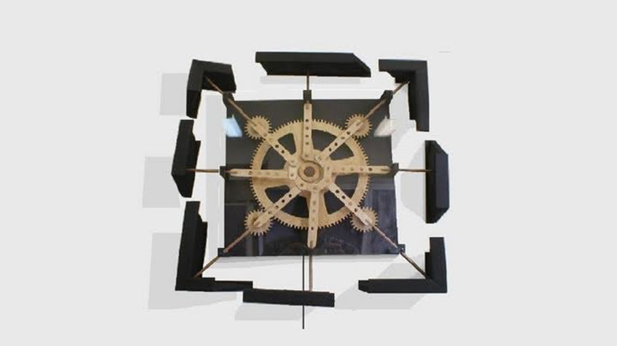

idea

Brett Dickins
https://vimeo.com/29912581-どんな人
歯車の構造をつかったキネティックアートを多く作っています。 ポートフォリオサイトがあるのですが、綺麗な写真がない… 全部自分で撮ってるんでしょうか？ https://sites.google.com/site/mechanicalsculptor/home/sculptures
-解説
歯車の動きをそのまま表現に落とし込んだ作品です。歯車が回ると枠がパカーンと割れて、またしばらくすると元に戻ります。とてもシュール。
-好きなところ
枠が割れるとこが面白いですね。 歯車の動き自体も、なめらかで、アニメーションの参考になります。